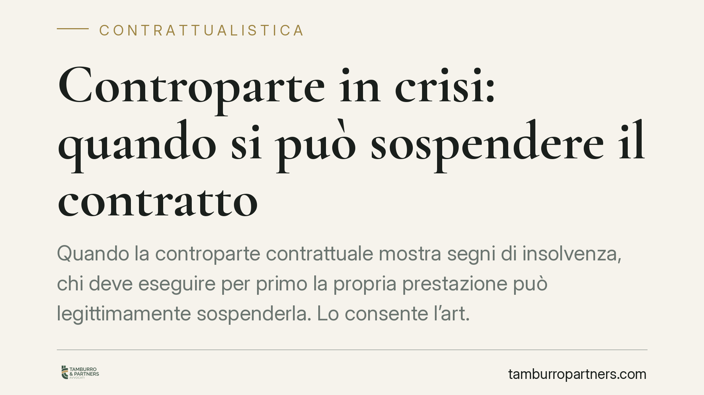

Controparte in crisi: quando si può sospendere il contratto
Quando la controparte contrattuale mostra segni di insolvenza, chi deve eseguire per primo la propria prestazione può legittimamente sospenderla. Lo consente l'art. 1461 del Codice civile, ma solo entro limiti rigorosi fissati dalla giurisprudenza. Vediamo quando l'eccezione è fondata e come evitare di trasformarsi da creditore prudente in parte inadempiente.

Il problema: eseguire per primo verso chi rischia di non pagare
Accade spesso nei rapporti commerciali continuativi. Il fornitore ha consegnato la merce, ma il cliente accumula ritardi nei pagamenti, subisce protesti o avvia una procedura di composizione della crisi. Chi deve consegnare la fornitura successiva si trova davanti a un dilemma: adempiere e sperare, o fermarsi e rischiare a sua volta la contestazione di inadempimento.
Il legislatore ha previsto uno strumento di autotutela per queste situazioni. Ma va maneggiato con cautela.
Inquadramento normativo
L'art. 1461 c.c. dispone che ciascuna parte può sospendere l'esecuzione della prestazione da lei dovuta se le condizioni patrimoniali dell'altra sono divenute tali da porre in evidente pericolo il conseguimento della controprestazione, salvo che sia prestata idonea garanzia.
La norma opera in due direzioni. Da un lato consente la sospensione a chi teme di non ricevere ciò che gli spetta. Dall'altro riconosce alla parte in difficoltà una via d'uscita: prestare una garanzia idonea (fideiussione, pegno, cauzione) che ripristini la fiducia contrattuale e obblighi la controparte a riprendere l'esecuzione.
Attenzione a una precisazione della Cassazione. Non basta un peggioramento qualsiasi delle condizioni economiche: deve trattarsi di un mutamento sopravvenuto rispetto al momento in cui il contratto è stato concluso. Se la controparte era già in difficoltà quando si è firmato, e questo era noto o conoscibile, l'eccezione non regge. La ratio è tutelare chi si trova esposto a un rischio nuovo, non chi ha consapevolmente accettato un rischio esistente.
Cosa cambia per l'imprenditore
La sospensione ex art. 1461 c.c. non scioglie il contratto: lo mette in pausa. Il rapporto resta in vita e riprende quando il pericolo cessa o viene offerta la garanzia. Non va confusa con la risoluzione, che estingue definitivamente il vincolo e presuppone un inadempimento già consumato.
Il punto delicato è la valutazione del "pericolo evidente". Deve trattarsi di elementi oggettivi e verificabili: protesti, decreti ingiuntivi, pignoramenti, apertura di una procedura concorsuale, sistematici mancati pagamenti. Un semplice sospetto, una voce di mercato o un singolo ritardo non giustificano la sospensione.
Chi sbaglia questa valutazione paga caro. Sospendere senza i presupposti significa diventare la parte inadempiente, con esposizione al risarcimento del danno e alla risoluzione del contratto a proprio sfavore. L'eccezione di insolvenza è un'arma a doppio taglio.
Il ruolo della garanzia
Se la controparte offre una garanzia idonea, il diritto di sospendere viene meno. "Idonea" significa adeguata all'entità della controprestazione e realmente escutibile. Una garanzia insufficiente o rilasciata da soggetto a sua volta in difficoltà non obbliga a riprendere l'esecuzione. Consigliamo di valutare sempre la solidità concreta del garante, non solo la forma dell'atto.
Cosa fare in concreto
- Raccogliete prove oggettive: documentate protesti, ingiunzioni, procedure concorsuali o pagamenti mancati prima di sospendere. La valutazione del pericolo deve poggiare su fatti, non su percezioni.
- Verificate la sopravvenienza: accertate che il peggioramento sia successivo alla stipula. Se conoscevate già la fragilità della controparte, l'eccezione è preclusa.
- Comunicate per iscritto: notificate la sospensione con lettera raccomandata o PEC, indicando le ragioni e richiamando espressamente l'art. 1461 c.c. Evitate sospensioni di fatto silenziose.
- Aprite alla garanzia: nella comunicazione precisate che riprenderete l'esecuzione a fronte di idonea garanzia. Questo rafforza la vostra posizione e dimostra buona fede.
- Fate valutare il caso prima di agire: la linea tra autotutela legittima e inadempimento è sottile. Un'analisi preventiva riduce il rischio di trovarvi dalla parte del torto.
La sospensione per insolvenza è uno strumento efficace ma esigente. Premia chi agisce su basi solide e penalizza chi si muove d'impulso. Nei rapporti continuativi, dove i rischi economici della controparte incidono direttamente sulla propria esposizione, conoscerne i confini è parte della gestione ordinaria del contratto.
---
*Contributo informativo a cura di Tamburro & Partners - Avv. Giuseppe Tamburro. Non costituisce parere legale.*
Ogni contratto ha il suo equilibrio.
Se vuoi una revisione delle clausole o una redazione su misura, scrivi allo studio. Ti rispondiamo entro un giorno lavorativo.